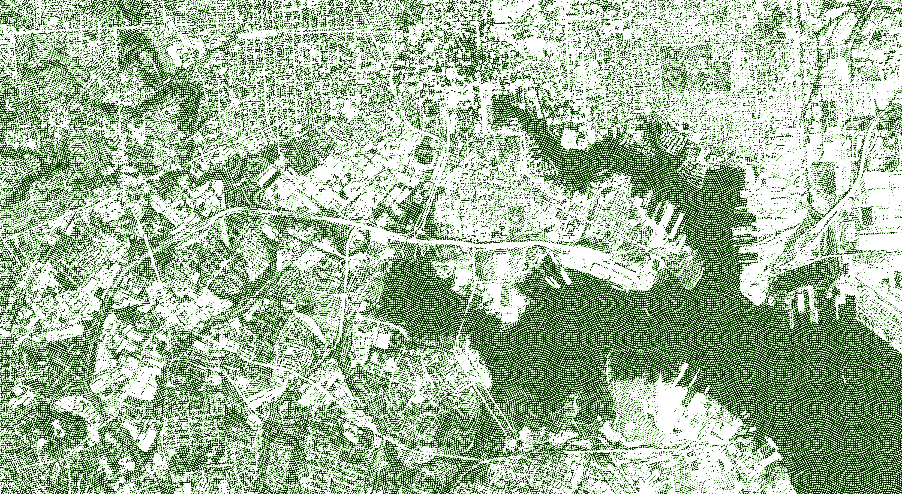

Advanced GIS
GES 486/687/673: Advanced Applications in Geographic Information Systems
Instructor: Dillon Mahmoudi (he/him)
Lecture: Mondays + Wednesdays 2:30PM - 3:45PM, Sondheim 001
Office hours: Wednesdays 1:00PM to 2:30PM and by appointment (email me)
Email: dillonm@umbc.edu

Course Focus and Guiding Questions
This course focuses on the methods for analyzing spatial data and provides an in-depth examination of technical aspects in spatial data handling, spatial pattern analysis, advanced raster processing, and dynamics GIS modeling. Students become familiar with advanced concepts, methods, and applications of Geographic Information Systems (GIS).
Course Objectives and Goals
We will be pursuing a host of goals.
Provide general map development skills for the visualization, animation, scripting with spatial data.
Enhance student’s abilities to initiate and complete a GIS project from proposal to end product which contains sound reasoning in the use of scientific methods.
Data management and R programming.
Exposure to open-source GIS software and new technologies.
Satellite photos and machine-learning
Point clouds — specifically with open-source
New spatial analysis methods.
Interactive dashboards.
International data exposure (IPUMS).
You’ll be assessed on three outcomes.
Define what constitutes a spatial analysis using GIS.
Understand how GIS technology is implemented using open source software.
Complete an independent research-based analysis utilizing main-stream GIS technology to address a scientific topic of societal concern.
As policy, in this course, I have expectations of you.
You’ll do the labs. On time. In order. This isn’t me being a stickler, it’s how the course scaffolds.
No makeup quizzes will be given. Contact me ahead of time if you’re going to miss a class.
Attendance is expected. Missing more than a couple classes will significantly reduce your grade.
Be thinking about
Logistics
Blackboard. This is the course outline and schedule. Please check Blackboard for a link to this site, a link to the class Blackboard session. Turn all assignments in on Blackboard. Know the difference between the backend (code) and the front end (formatted web page) to turn-in GitHub links. Assignments will be posted on Blackboard (links) and GitHub.
Computing. I recommend using your own personal laptop in this course, however, you’re free to use one of the lab computers. I recommend using the same computer for each class.
Discord + Community. Technical learning alone is a recipe for disaster. Rely on your fellow classmates and ask questions in the class discord. This link is an invite for Discord for the first week of class. https://discord.gg/9wUhDdQV
Schedule.. Mondays we will spend on lecturing. Wednesdays we’ll start with a quick in-class exercise before moving into lab time. Quizzes will be on Wednesdays.
Required Texts
O’Sullivan, David. 2024. Computing Geographically: Bridging GIScience and Geography. New York and London: Guilford Press. ISBN-13: 9781462553938.
- This will be the main material for quizzes. This will be required by Week 3. Consider the e-book.
Cutts, Andrew and Anita Graser. 2018. Learn QGIS: your step-by-step guide to the fundamental of QGIS 3.4. Fourth Edition. Birmingham, UK: Packt Publishing. ISBN-13: 9781788998864.
You can get this book online for free from the UMBC library: https://catalog.umd.edu/docno=006153965
Make sure to review the Preface to get the needed data and materials for the various chapters.
Walker, Kyle. Online. Analyzing US Census Data: Methods, Maps, and Models in R.
- This book is freely available: https://walker-data.com/census-r/
Wickham, Hadley, Mine Çetinkaya-Rundel, and Garrett Grolemund. 2023. R for Data Science: Import, Tidy, Transform, Visualize, and Model Data. 2nd edition. Beijing Boston Farnham Sebastopol Tokyo: O’Reilly Media.
- This book is freely available: https://r4ds.hadley.nz/
Course Schedule
This course is designed around a series of labs and a final project. The final project is designed to give you flexibility to explore what you want to explore. In addition there will be short quizzes along the way which are part of your grade.
Learning QGIS
Learning R/RStudio
Week 04 (Feb 19): Lab 04
Week 05 (Feb 26): Lab 05
Advanced Spatial Analysis
Week 06 (Mar 04): Lab 06
Week 07 (Mar 11): Lab 07
Week 08 (Mar 18): NO CLASS, Spring Break
Week 09 (Mar 25): Lab 08; NO CLASS Mar 27
Advanced Techniques
Week 10 (Apr 01): Lab 09
Week 11 (Apr 08): Lab 10
Week 12 (Apr 15): Lab 11
Week 13 (Apr 22): Lab 12
Final Project
Week 14 (Apr 29): Final project proposal, work sessions.
Week 15 (May 06): Final project work sessions.
Week 16 (May 13): Final project draft due, code review.
Finals Period (May 17, 1pm): Graduate Student Project Presentations
May 17 at 11:59pm: Final projects submissions due.
Grading
Undergraduate Scale
A 90%; B 80%; C 70%; D 60%; F < 60%
Graduate Scale
A 93%; A- 90%; B+ 87%; B 83%; B- 80%; C+ 77%; C 73%; C- 70%; D 67%; F < 60%
Breakdown
Attendance + Participation + Sharing: 10%
Labs: 40%
Quizzes: 10%
Final Project: 40%
Late Assignments
You do yourself a disservice when you turn in late work or skip assignments. It hampers your ability to build. Don’t do it!
Late work will be deducted 5% per twenty-four hour period that elapses after the due date. If foreseen or unforeseen circumstances prevent you from completing an assignment on time, you may request an extension. Extensions must be requested in advance of the due date. If the situation warrants an extension, we will determine a new due date for the essay based on your individual circumstances.
Plagiarism
“Academic integrity has everything to do with one’s character.” -Former UMBC President Freeman Hrawbowski
Academic integrity is an important value at UMBC. By enrolling in this course, each student assumes the responsibilities of an active participant in UMBC’s scholarly community in which everyone’s academic work and behavior are held to the highest standards of honesty. Cheating, fabrication, plagiarism, and helping others to commit these acts are all forms of academic dishonesty, and they are wrong. Academic misconduct could result in disciplinary action that may include, but is not limited to, suspension or dismissal.
✅ Policy: https://oue.umbc.edu/ai/
Disabilities
The Americans with Disabilities Act (ADA) is a federal anti-discrimination statute that provides comprehensive civil rights protection for persons with disabilities. Among other things, this legislation requires that all students with disabilities be guaranteed a learning environment that provides for reasonable accommodation of their disabilities. Moreover, the UMBC requires students register with the Office of Student Disability Services and I will work with you and the SDS to ensure your success.
✅ Policy: http://sds.umbc.edu/accommodations/registering-with-sds
Discrimination and Sexual Harassment
With UMBC, I am dedicated to fostering an inclusive and welcoming environment for all members of the campus community and recognizes its responsibility to maintain a campus environment which is free from Sexual Misconduct, and other Related Misconduct. This Policy embodies the University’s commitment to increasing awareness of such prohibited conduct and actively promoting prevention and educational programs for community members in an effort to eliminate occurrences, prevent re-occurrences, and address and remedy the discriminatory effects of the Sexual Misconduct. For additional resources, see UMBC’s policy posted online.
✅ File a complaint: http://humanrelations.umbc.edu/sexual-misconduct/file-a-complaint/
If you need to speak to someone, UMBC has the following resources available to support you:
The Counseling Center (confidential): 410-455-2472
University Health Services (confidential): 410-455-2542
After-hours counseling and care available by calling campus police at: 410-455-5555
The Women’s Center (quasi-confidential): 410-455-2714
Title IX Coordinator (quasi-confidential): 410-455-1606
✅ Additional on and off campus supports and resources can be found at: http://humanrelations.umbc.edu/sexualmisconduct/gender-equitytitle-ix/